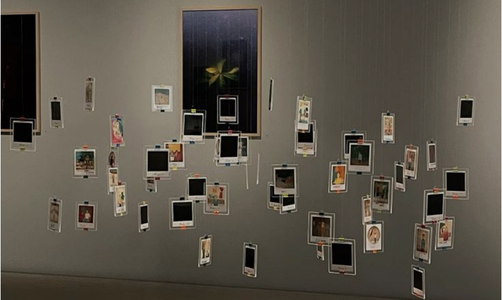

Chapel Hill's Ackland art museum displays UNC Chapel Hill student portfolios. Multimedia pieces are the main focus, along with scultural structures. Student photographer Amy Smith documented this debut in photographs, soon to be released for The Daily Tarheel.